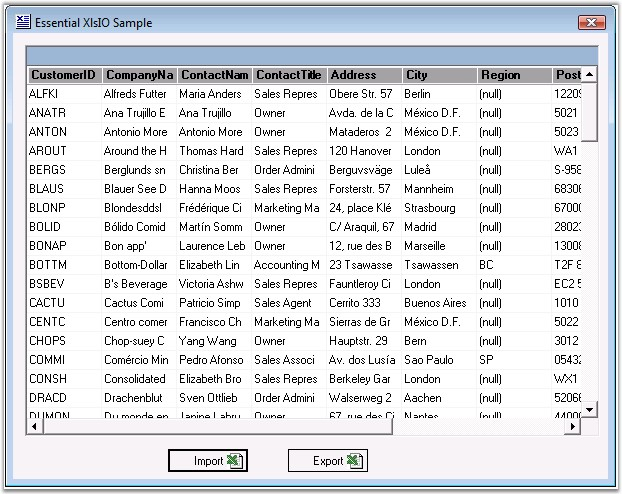
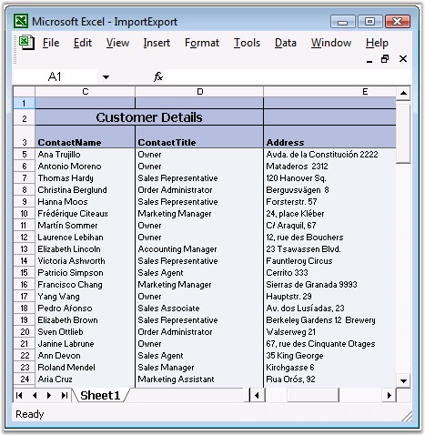

XlsIO has some helper methods that enable working with the ADO.NET data sources very easily.
Importing
It only takes one line of code to import an ADO.NET data table into a worksheet. There are similar methods for working with other data sources like Data View, Data Column, Arrays, and so on. A data table from another source can be imported inside a worksheet by using the ImportDataTable method. It has an option to select the record range (row start, row end, col start and col end). It also allows preserving the data type in the data source.
Exporting
Similarly, it is simple to export the sheet data to a data table by using the ExportDataTable method of IWorksheet. This method allows to select the various data table options such as include column names, export formula calculated values, styles and types, through the ExcelExportDataTableOption enumeration. It has the following values.
|
Member Name |
Description |
|
None |
No datatable exports flags. |
|
ColumnNames |
Represents the ColumnNames datatable export flag. |
|
ComputedFormulaValues |
Represents the ComputedFormulaValues datatable export flag. |
|
DetectColumnTypes |
Indicates that XlsIO should try to detect column types. |
|
DefaultStyleColumnTypes |
When DetectColumnTypes is set and this flag is set too, it means that default column style must be used to detect style, if this flag is not set, but DetectColumnTypes is set, then first cell in the column will be used to detect column type. |
 For more information on this
feature, see: http://www.syncfusion.com/products/reporting-edition/xlsio/features#export-options
For more information on this
feature, see: http://www.syncfusion.com/products/reporting-edition/xlsio/features#export-options
The following image illustrates the import and export of the data from/to a grid or database.

Figure 133: Import/Export Data
Following code example illustrates how to export a data table from a sheet to a grid, and then import a data table from a data grid to a sheet.
|
[C#]
// Read data from the spreadsheet. DataTable customersTable = sheet.ExportDataTable(sheet.UsedRange,ExcelExportDataTableOptions.ColumnNames); this.dataGrid1.DataSource = customersTable;
// Export DataTable. if(this.dataGrid1.DataSource != null) { sheet.ImportDataTable((DataTable)this.dataGrid1.DataSource,true,1,1,-1,-1); } else { MessageBox.Show("There is no datatable to export, Please import a datatable first","Error"); return; } |
|
[VB.NET]
' Read data from the spreadsheet. Dim customersTable As DataTable = sheet.ExportDataTable(sheet.UsedRange,ExcelExportDataTableOptions.ColumnNames) Me.dataGrid1.DataSource = customersTable
' Export DataTable. If Not Me.dataGrid1.DataSource Is Nothing Then sheet.ImportDataTable(CType(Me.dataGrid1.DataSource, DataTable),True,1,1,-1,-1) Else MessageBox.Show("There is no datatable to export, Please import a datatable first","Error") Return End If |
ImportDataTable has few overloads which can be used to enable some of the customization options. For more details, see XlsIO class reference in Online documentation.
It enables importing data from named ranges, allows to show/hide field names in the columns, import only a particular range of records in a data table, and allows to preserve the data types in a data table.

Figure 134: MS Excel file generated from the Grid data by using XlsIO
Exporting Excel to PDF
Essential XlsIO allows exporting an Excel document into PDF format. Use the Convert method of the ExcelToPdfConverter class to convert the Excel spreadsheet and save the PDF output.
Note: You need to have both Essential PDF and Essential XlsIO installed in your system since Syncfusion.ExceltoPDFConverter.Base.dll is conditionally shipped when both XlsIO.Base and Pdf.Base is installed.
|
[C#]
//Open the Excel document you want to convert ExcelToPdfConverter converter = new ExcelToPdfConverter("Sample.xlsx");
//Initialize the PDF document PdfDocument pdfDoc = new PdfDocument();
//Initialize the ExcelToPdfconverterSettings ExcelToPdfConverterSettings settings = new ExcelToPdfConverterSettings();
// Set the Layout Options for the output Pdf page. settings.LayoutOptions = LayoutOptions.FitSheetOnOnePage;
//Assign the PDF document to the TemplateDocument property of ExcelToPdfConverterSettings settings.TemplateDocument = pdfDoc; settings.DisplayGridLines = GridLinesDisplayStyle.Invisible;
//Convert the Excel document to PDF document pdfDoc = converter.Convert(settings);
//Save the PDF file pdfDoc.Save("ExceltoPdf.pdf"); |
|
[VB.NET]
'Open the Excel document you want to convert Dim converter As New ExcelToPdfConverter("Sample.xlsx")
'Initialize the PDF document Dim pdfDoc As New PdfDocument()
'Initialize the ExcelToPdfconverterSettings Dim settings As New ExcelToPdfConverterSettings()
'Set the Layout Options for the output PDF page. settings.LayoutOptions = LayoutOptions.FitSheetOnOnePage
'Assign the PDF document to the TemplateDocument property of ExcelToPdfConverterSettings settings.TemplateDocument = pdfDoc settings.DisplayGridLines = GridLinesDisplayStyle.Invisible
'Convert the Excel document to PDF document pdfDoc = converter.Convert(settings)
'Save the PDF file pdfDoc.Save("ExceltoPdf.pdf")
|
Supported Elements
This feature provides support for the following elements:
· Styles
· Character formatting
· Headers and footers
· Images
· Text boxes
· Hyperlinks
· Document properties
· Comments
· Encryption
· TableStyle Support
· Text Rotations
· Excel Page Setup Options
· Unicode Support
· Background Images
· Printing Titles when Converting the Excel to PDF
· Page Break Support
· Print Area Support
· Print Order Support
· Unicode in Headers and Footers
Styles
This feature supports almost all the styles supported by Excel 2007.
Character formatting
This feature supports almost all character formatting. The supported character formatting features are:
· Character fonts
· Font size
· Font styles (bold, italic, underline, and strikethrough)
· Subscript and superscript
· Text highlighting
· Indents, tabs, and spaces
· Line spacing
· Left, right, and center justification
· Line breaks within the cell
Headers and Footers
Page headers and footers are supported and can contain images, text, and page number fields.
Images
The images present in the document are supported along with their corresponding positions and sizes.
Known Limitations - Images placed inside a shape will not be preserved in the generated PDF document.
Text Box
The text value present in the text box will be rendered as text at its actual position in the generated PDF document.
Hyperlinks
The hyperlinks present in the Excel documents will also be preserved in the generated PDF document.
Document Properties
Document properties present in the Excel documents will also be preserved in the generated PDF document.
Table Styles Support
Built-In Table styles present in the Excel documents will also be preserved in the generated PDF document.
Text Rotations
Rotated text present in the Excel sheet cell will be preserved in the generated PDF document.
Excel sheet Page Setup options
The Page setup option of the input Excel sheet will be preserved in the generated PDF document. The following are the Excel page setup options that are preserved.
· Orientation
· Center On Page
Unicode Support
The other language and unicode present in the input Excel document will be preserved in the generated PDF document.
Background Images
The Background image present in the Excel document will be preserved in the generated PDF document.
Note: The image will be get tiled based on the size of the output pdf document.
Comments
Comments present in the Excel document cells will also be preserved in the generated PDF document.
Encryption
An encrypted Excel document will also be preserved and generated as an encrypted PDF document by passing the password for the encrypted Excel document.
Unsupported Elements
The following list contains unsupported elements that presently will not be preserved in the generated PDF document.
· Shapes and auto-shapes
· Charts
· Grouping columns
· OLE Objects
· Text rotations
· Background images
Printing Titles when Converting the Excel to PDF
Title rows and columns in the Excel sheet can be printed on the PDF page, using this feature. By setting the print titles for rows and columns in the Excel sheet, the same will get reflected in the PDF when converting the Excel to PDF.
Page Break Support
Manually inserted page breaks that are available in the Excel document, will be included while laying out the PDF document.nPrint Order Support.
Print Order Support
The Print order enabled in the Excel document will be considered while laying out the PDF page. The following are the page order options that are supported:
· Down Then Over
· Over Then Down
Note: It considers the Print Area and Page breaks while laying out, based on Print Order.
Print Area Support
Print Area available in the Excel document will be considered while laying out the PDF document. Both, Row Index Only[1: 20] and Column Index Only[A:D] support have also been included in Unicode in Headers and Footers.
Unicode in Headers and Footers
The other language and unicode present in the headers and footers will be preserved in the generated PDF document.
For More Information Refer:
AutoFilters, Validating Data, Template Markers, Grouping and Ungrouping, Print Settings.
 Binding Data Objects to Template
Markers
Binding Data Objects to Template
Markers